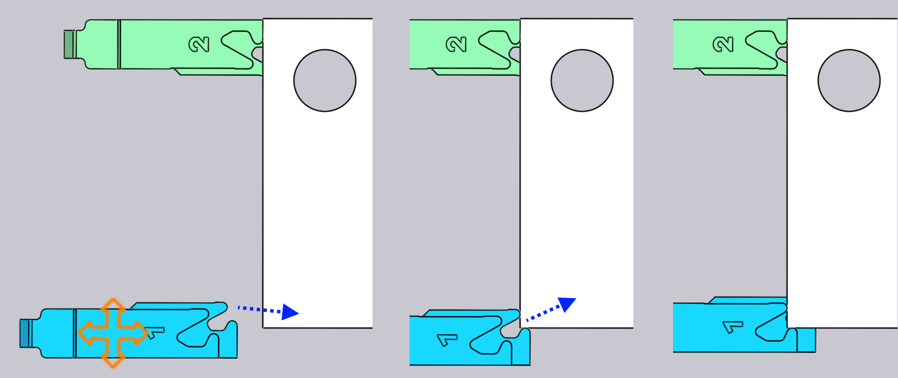

突き当ての編集
各曲げ加工の突き当て位置は、突き当てをクリックして調整できます - こうすると、横に示すように位置ストップパネルが開きます。
位置ストップパネル

-
Gauge セレクターを使用して、編集する位置ストップを選択します (位置ストップをクリックすると、その位置ストップを編集するためのパネルが表示されます)。 Shift+クリックで他の位置ストップをクリックすると、両方の位置ストップの共通設定を一緒に編集できます。
-
Z、X、R 入力で、位置ストップの位置を 3 つの次元で調整します。ほとんどのプレスブレーキでは、軸は以下の図のようになっています：[1]

-
Surfaceセレクターで、突き当ての別の_表面_をパーツに嵌め込みます。使用可能な表面のセットはマシンによって異なり、すべての表面をすべての曲げ加工に使用できるわけではありません (特定の表面を使用できない場合、TecZone Bendが通知します)。下の画像では、異なる表面が使用されています。

-
Retract設定で、曲げ加工前の位置ストップのリトラクト距離を設定します。曲げ加工によっては、パーツをパンチで_挟んだ_後、曲げる前に（衝突を避けるため）、突き当てを一定距離（+X 方向に）リトラクとする必要があります。この設定で、リトラクト距離を制御します。プレビューにあるように、これの編集時に、TecZone Bendは位置ストップを実際に指定量リトラクトするので、リトラクトが十分かを判断できます。
-
Auto-Placeボタンを使って、TecZone Bendで、指定位置ストップの位置を自動計算します。通常、TecZone Bendには、複数の位置ストップオプションがあり、自動配置 ボタンを繰り返しクリックすると、それらオプションが循環表示されます。_初期設定_に戻すには、位置ストップパネルを閉じて、位置ストップをもう一度クリックし、自動配置 をクリックします - 選択した最初の位置が初期設定です (これは元の自動順序とツーリングの結果でもあります)。
-
Flip Part ボタンで、パーツ反対側をマシンに挿入し、新たに位置ストップを計算します。これは、曲げ加工パネルのパーツ反転ボタンに似ています。
-
PrevおよびNextボタンで、前の曲げ加工または次の曲げ加工に移動し、その曲げ加工の位置ストップを編集します。
上級
位置ストップの上級ファンクションは以下です：
複数曲げ加工用の位置ストップの編集
複数の曲げ加工用に位置ストップ位置を同時に編集できます。
これを行うには、まず、曲げ加工ナビゲーターのShift+をクリックして、複数の曲げ加工を選択します。次に、位置ストップをクリックします。隣の画像は、曲げ加工1、2、4の位置ストップ位置をまとめて編集しているところです。

この例では、すべての曲げ加工では、位置ストップの同じ Z 位置が使用されており、この位置を編集すると、すべての位置ストップの Z 位置が調整されます。X および R の位置の値は曲げ加工ごとに異なるため空白です。ただし、X または R 値を入力すると、すべての曲げ加工に適用されます。通常、この機能を使用することはほとんどありません。位置ストップパネルは特定のプレスブレーキの制約を把握しており、必要なすべての制限を自動的に適用します。たとえば、2 つの位置ストップの R 位置は、いくつかのマシンでは同じでなくてはなりません (独立した R1 軸と R2 軸がありません) - TecZone Bend1 つの位置ストップの R 位置を編集すると、もう 1 つ位置ストップも即座にそれに追随します。
_2軸_位置ストップを備えたいくつかのマシンでは、位置ストップのZ位置は手動設定し、通常は曲げ加工ごと変わりません（オペレーターが、各曲げ加工後に位置ストップを手動で調整するからです）。このようなマシンでは、1 つの曲げ加工に Z 位置を設定すると、すべての曲げ加工に適用されます。衝突状況や位置ストップ接触状況などは、すべての曲げ加工について即座に計算されます。従って、すべての曲げ加工に使える共通のZ1およびZ2位置は、簡単に見つけられます。
位置ストップのドラッグ
正確な位置ストップ位置は Z、X、R 値を入力して設定できますが、位置ストップをドラッグしてパーツに接触させる方が簡単なこともよくあります。
-
ドラッグする位置ストップを1回クリックして選択します。
-
選択した位置ストップをクリックしてドラッグして配置します。_視点_に応じて、位置ストップは水平方向または垂直方向の平面に沿ってドラッグされます。通常は、位置ストップがパーツから離れた位置から始め、パーツに接触するまでドラッグして移動します。さらにドラッグを続けると（位置ストップをパーツに_押し込む_と）、_ワイヤーフレーム_は動き続けますが、実際の位置ストップはパーツに触れると停止します。

上の画像は、このプロセスです - 矢印で示された方向に位置ストップを材料に向けてドラッグし始めます。位置ストップは材料に触れるとすぐに停止しますが、ワイヤーフレーム表示だけが動き続けます（位置ストップをドラッグしようとしている場所を示すため）。こうして、衝突なしに、位置ストップをパーツと接触し、隙間がないように位置決めできます。
上の画像では、ほぼ_真上から下に向かって_位置ストップを見たところです。したがって、位置ストップはXZ面を移動し、位置ストップのR値は一定に保たれます。ビューをより_側面寄り_の視点に回転すると、位置ストップはXR面を移動し、Z値が一定に保たれます。
ドラッグ中のクランプスナップ
ストップタイプの表面を使用する場合でも、位置ストップをドラッグして、簡単に正確に位置決め出来ます。いずれかの クランプタイプの表面を使用する場合、クランプ フィンガーの両面をパーツにはめ込まなくてはならないので、これは困難です。
TecZone Bendを使うと、位置ストップが可能な_クランプ位置_に近づくと、自動的に_スナップ（自動吸着）_するので、容易です。このメカニズムを使用するには、まずビューを回転し、上から位置ストップが見えるようにします。次に、クランプするコーナーがフィンガーの開口部近くに収まるように位置ストップをドラッグします：

上の画像は、進行中のクランプ操作です。位置ストップをドラッグしてクランプ位置に近づけると、クランプ位置１に_スナップ_します（上中央の画像を参照）。さらにドラッグすると、位置ストップはクランプ位置２にスナップします（上の画像、右を参照）。位置ストップを異なるクランプのスナップに移動すると、R値は自動的に上下に調整されます。